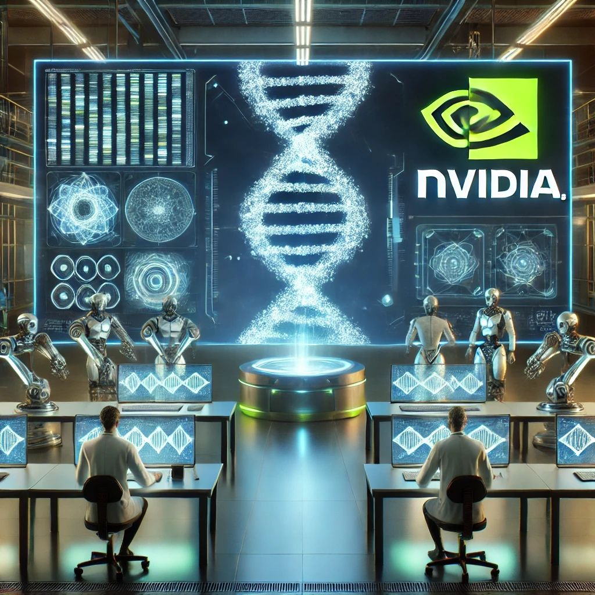

האם אנחנו מתקרבים ליצירת חיים באמצעות AI?
פורסם במקור ב LinkedIn
האם אנחנו מתקרבים ליצירת חיים באמצעות AI?
השבוע NVIDIA הכריזה על פריצת דרך: בינה מלאכותית שיודעת ליצור גנום מלא מאפס.
נשמע כמו מדע בדיוני? זה כבר כאן.
המודל החדש, Evo 2, הוא מודל גנרטיבי דיפוזי (בדומה לאלו שמייצרים תמונות או טקסט) – אבל במקום ציורים או מילים, הוא מייצר רצפי DNA חדשים שלא קיימים בטבע.
למה זה מטורף?
במקום להסתמך על מוטציות אקראיות או ניסויים ארוכים, אפשר פשוט לבקש מה-AI להמציא רצף DNA עם תכונות רצויות.
המשמעות?
✅ פיתוח תרופות חדשות – התאמה אישית של חלבונים ותרכובות רפואיות.
✅ חקלאות חכמה – יצירת זנים עמידים יותר למחלות ולשינויי אקלים.
✅ ביו-הנדסה – בניית חומרים ביולוגיים חדשים לחלוטין.
אבל גם עולות שאלות רציניות:
⚠️ מה יקרה אם ניצור אורגניזם חדש בלי להבין את ההשלכות?
⚠️ איך מבטיחים שהטכנולוגיה הזו לא תנוצל לרעה?
⚠️ ואם AI יכול לכתוב את קוד החיים – מי ישלוט במי בעתיד?
אנחנו עומדים על סף עידן חדש, שבו AI כבר לא רק “מחקה” אלא יוצר חיים חדשים מאפס.
השאלה המתבקשת היא - איך מוודאים שזה ישמש אותנו לבנייה ולא להרס?
המודל זמין לכל חוקר שרוצה להשתמש בו דרך פלטפורמה ייעודית של אנבידיה
🧬
מה דעתכם? זו מהפכה שתציל חיים או איום שצריך לפחד ממנו? ואולי גם וגם
